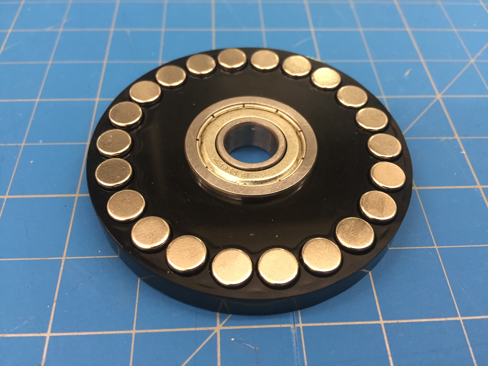
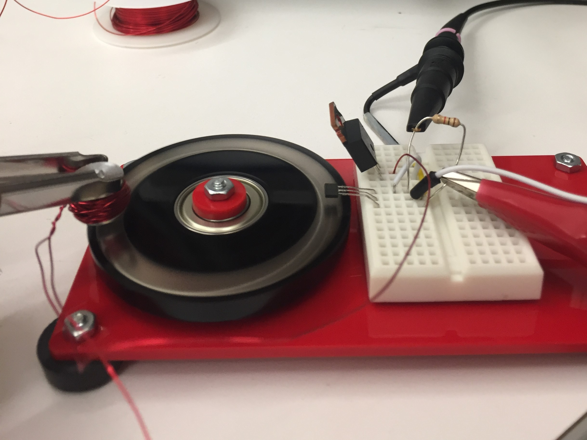
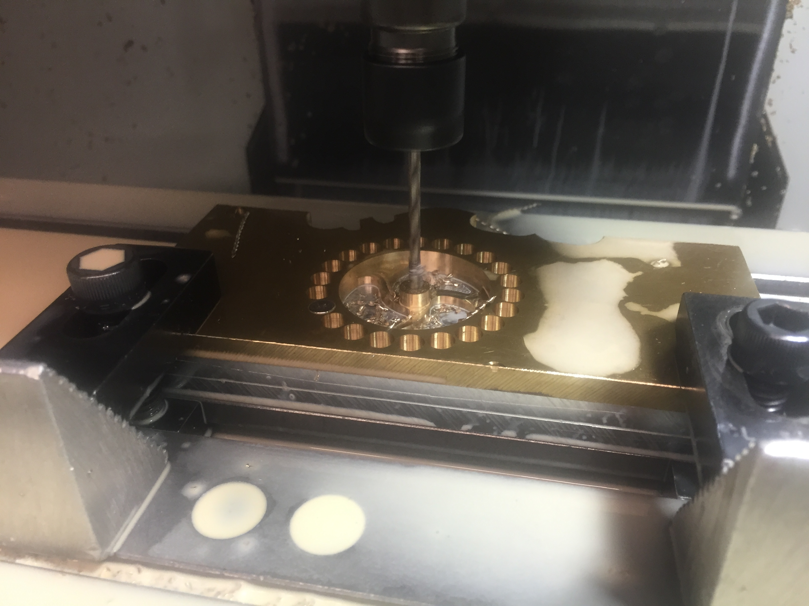
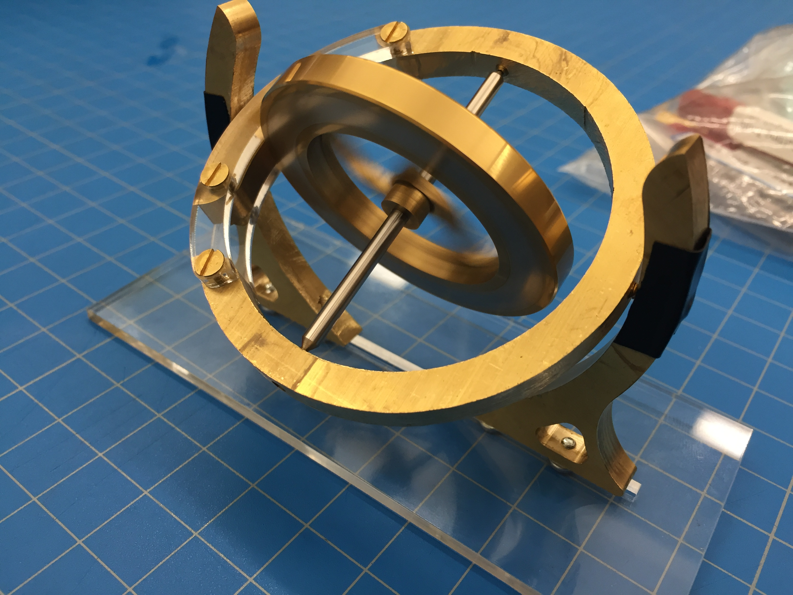
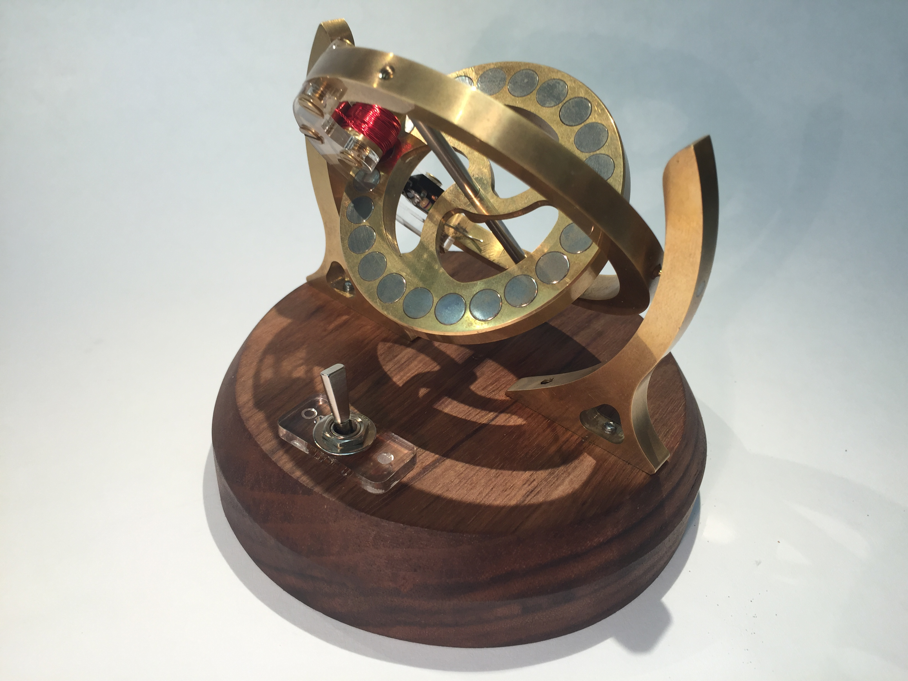

Momentum
A synthesis of mechatronics, design, and dynamics
I created Momentum as a combination of the knowledge that I had obtained throughout my masters progam a stanford. The combination of precision machining, dynamics, electrical design and mechanical design really appealed to me, and led me to the design I ended up with. I also greatly enjoy working with brass, as its color is very evocative of clockwork and it is a joy to machines.

Rotor Design
In order to make the rotor of the gyroscope also a driven motor, I designed it to have magnets embedded in the rim to provide something I could drive with an electromagnet. The magnets were alternated to provide an oscillating magnetic field as the motor spun. This simple prototype was cut from acrylic, to verify the dimensions and coil design before locking in a design in brass. Because stall torque was not a critical parameter for the system, and there were very little mechanical losses in the system, motor design was greatly simplified.

Electrical Implementation
Due to limited space in the final design, I tried my best to minimize the required components to drive the motor. It was a sensored, single phase brushless motor where a hall effect sensor was used to drive the base of a high current PNP bipolar junction transistor. By using a BJT instead of a mosfet, I was able to control the power dissipation in my hand wound stator coil much more easily. This allowed me to carefully callibrate how much power I could send to the motor while avoiding overheating. Tha hall effect sensor provided the phase offset for the commutation by being out of phase with the drive coil.

Machining
With the motor design verified, I moved on to machining all of the individual parts of the gyroscope. All of the parts were machined from brass on a HAAS Officemill, with additional steps taken on manual machines, such as adding threaded holes for the cone bearings or spring pins which conducted current from the outer frame to the inner frame. Magnets were seated in the rim of the rotor using retaining Loctite, as was the shaft of the rotor. In addtion, I used a lathe to machine wind my drive cool, to ensure tight consistent coils.

Test fit
Before finishing or electronics were added, I fit all the mechanical components together to verify that all of the bearing fits were working properly, the rotor was spinning freely, and that the inner frame would rotate in a compelling way when the outer frame was played with. Even under hand power, the gyro was rather compelling and served to quell any concerns I had about the design. With the design fully setteled, I soldered the sping pins that formed the outer pivots to the outer frame and then begran the process of sanding and buffing all of the brass elements.

Final Touches
To add contrast and highlight the beauty of the brass, I added a base made from oiled walnut that also housed the batteries. A switch with an on-off indicator was added, as the motor is not guaranteed to start and I wanted to insure that the user would know whether it was on or off, even when not spinning. In the end, I was satisfied with the result of my little machine, as it has a lot of momentum, runs quietly, and is visually entrancing.